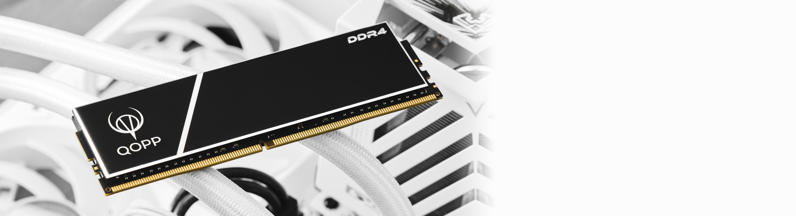
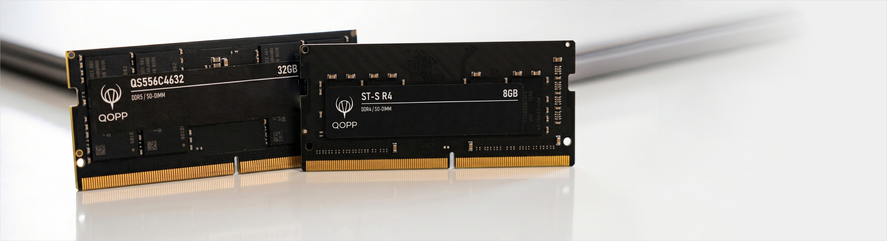

UDIMM: модули для персонального компьютера, DDR3, DDR4 и DDR5

SO-DIMM: модули для ноутбука, DDR3, DDR4 и DDR5

Какая память в вашем устройстве
Модули показаны в одном масштабе. Чтобы память подошла, должны совпасть формат и поколение: DDR3, DDR4 или DDR5.